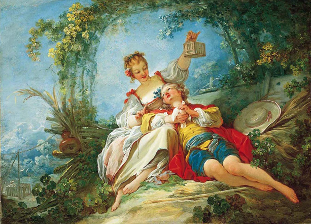

Happy Lovers by Jean–Honoré Fragonard
My natural mode is observation. Ironically, I deeply enjoy the passivity of noticing small intricacies in human interaction, sometimes more than I do
engaging in it.
I love cafe ambiences humming with conversation,
the sound of lovers' laughter exchanged through the air, and frolicking through lamp-lit streets at sunset as the city winds down from its corporate sprint.
My purpose here is to provide an exploration on people, societies, and observations on social constructs from an observer's perspective (part of a deeper exploration in the future).
Here, I aim primarily to share analogies and observations in list-form as I experience them.
observations
- criticality of ecosystems: your social ecosystem make or break your perspective. select your inner circle with high levels of scrutiny.
Things never to deviate from: your deep convictions/opinions, moral principles, and desired life trajectory (ex: fast wins vs long term game).
-
social capital is a wrong signal: most social ecosystems operate off hype cycles and capturing our ever-shortening attention spans.
never use a person's social credibility as a foundational judgement of character.
-
sheep are common, often disguised: most of society is made of followers. there are some things that are disguised as capability like high-status roles,
meaningless contrarianism (building a startup for the sake of it), and social capital (high social following and praise). Practice noticing these false signals.
-
incentives of quick wins: current society awards those with high velocity and ability to reach achievement checkpoints fast. My thesis is that the next
decade will award high-agency individuals obsessed with a singular mission -- high clarity will win over shallow achievement.
-
intuiting about ingenuity: there is a spark in their eyes that lights up when they rabbithole down ideas they love. they talk about ideas, not achievements.
they have this open-minded child-like enthusiasm and aura about them.
building culture